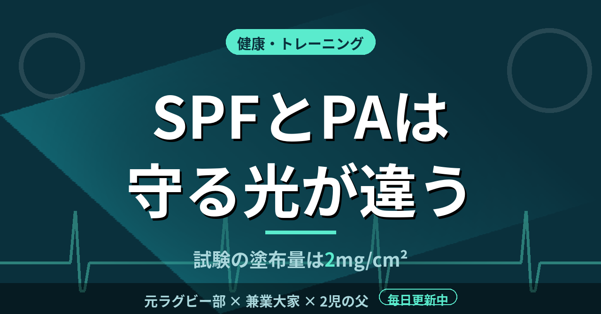
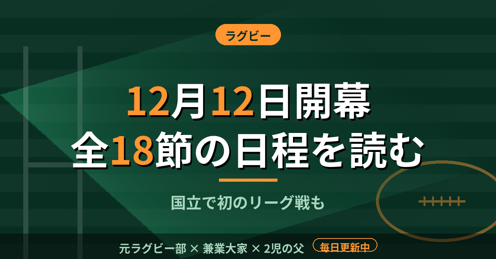
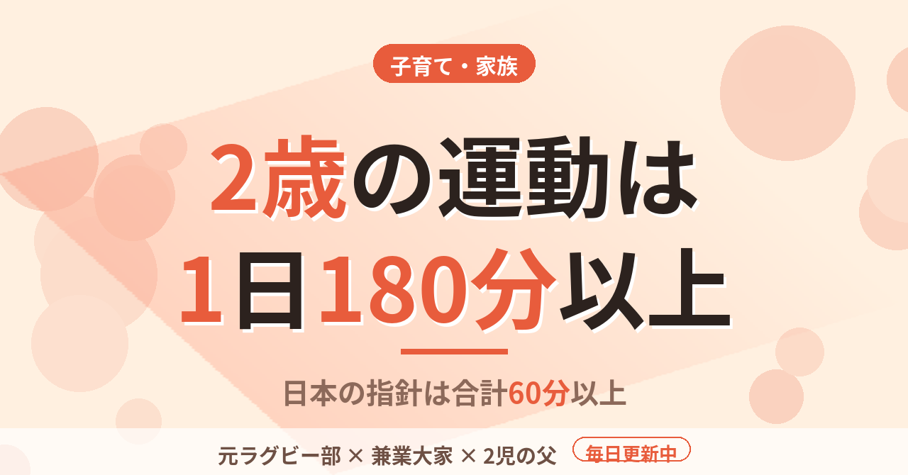

hohemaro15
ラグビー20年、不動産1棟。調べてから書く記録
このサイトについて
小学5年でラグビーを始めて、大学まで20年続けた。大阪の激戦区で6年、同志社大で4年。ポジションはユーティリティバックス。
今はメーカーで設備の電気を担当しながら、兵庫県尼崎市に木造9戸の一棟アパートを運用している。2児の父。
経験談だけで終わらせないために、書く前に必ず制度と統計を調べることにしている。数字が確認できなかった話は書かない。
書いていること
ラグビー
小5から大学まで20年。大阪の激戦区で見たこと、カテゴリが上がるたびに起きたこと。
不動産・資産運用
2016年に検討を始めて2026年に1棟目。判断基準と、断り続けた10年の話。
健康・トレーニング
増量の失敗と成功、サプリで肝臓の数値を悪くした経験、続けている設計。
子育て・家族
2歳と0歳を育てながらの時間の使い方と、資産形成の時間軸。
最近の記事
-

健康・トレーニングSPFはUVB用、PAはUVA用。試験の塗布量は2mg/cm²と決まっている
3年前、関東の工場勤務から京都の研究所勤務に変わって、外に出る時間が減った。そのとき「自分は肌が汚い。このまま年を取ったら怖い」と感じた。肌の施術には手を出したが、毎日浴びる紫外線の基準は読んだことがなかった。日焼け止め…
-
不動産・資産運用
NISA口座は2年半で約800万増の2,227万。買付額の約75％は成長投資枠だった
僕のNISAの積立と国債は、動かさない資金として切り分けている。では、世の中でNISA口座はどれくらい増えて、どこに資金が入っているのか。日本証券業協会の資料で数えてみた。…
-

ラグビーリーグワンは12月12日開幕で全18節。国立の初開催まで、元ラグビー部が日程を読んだ
大学まで20年ラグビーを続けたのに、社会人のシーズンがいつ始まり、いつ終わるのかを自分で数えたことはなかった。今年は日程を調べて、並べてみた。…
-

子育て・家族2歳の運動はWHOで1日180分以上、日本の指針は60分以上。ラグビーしか知らない父が数えた
休日の朝、2歳の子が公園を走り回って、もう30分になる。僕が現役のころは、練習が3時間あった。では2歳の子は、1日にどれくらい体を動かせば足りるのか。国と国際機関の数字を調べた。…
-
 不動産・資産運用
不動産・資産運用
東京23区の築浅一棟アパートは利回り5.07％。築10年で7.3％を買った僕の位置
2棟目を探すとき、最初は東京も候補に入れて物件の一覧を眺めていた。1棟目に買ったのは、尼崎の築10年の木造9戸で、価格は1億700万円、表面利回りは7.3％。この数字が市場のどのあたりにあるのか、健美家が公表している四半…
-
 ゴルフ
ゴルフ
ゴルフ場の年間利用者数は1億232万人から8,650万人へ。月1〜3回回る僕の位置
社会人になってから、ゴルフは毎年月1回以上、シーズン中は月2〜3回のペースで回ってきた。コースに出ていると人は多いように感じるが、全国で見ると増えているのか減っているのか、考えたことがなかった。日本ゴルフ場経営者協会の数…